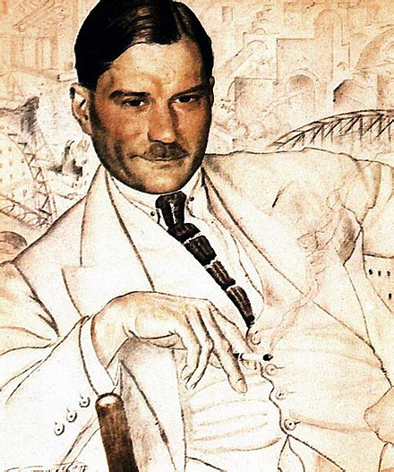

Evgeny Zamiatin (1884-1937)
- Modernism - focus on language, use of skaz (Bakhtin would call it "double-voicedness" when the author's voice dominates the voice of the character); dystopian characters from the future and instantiation of 1920s ornamentalist prose
- Modernism - ideology of alienation from traditional morality
- We (1921) - dystopia of totalitarian society
- Satire
- Anxiety of belonging - being a loyal state engineer and being in love with a rebel; conflicted; insufficiency of language leads to astounding images
- Skaz - we know immediately that this is not Zamitain, a different voice - diary writer; but reader can't identify with him; reader feels this distance
- New sexuality - too graphic from Soviet official point of view
